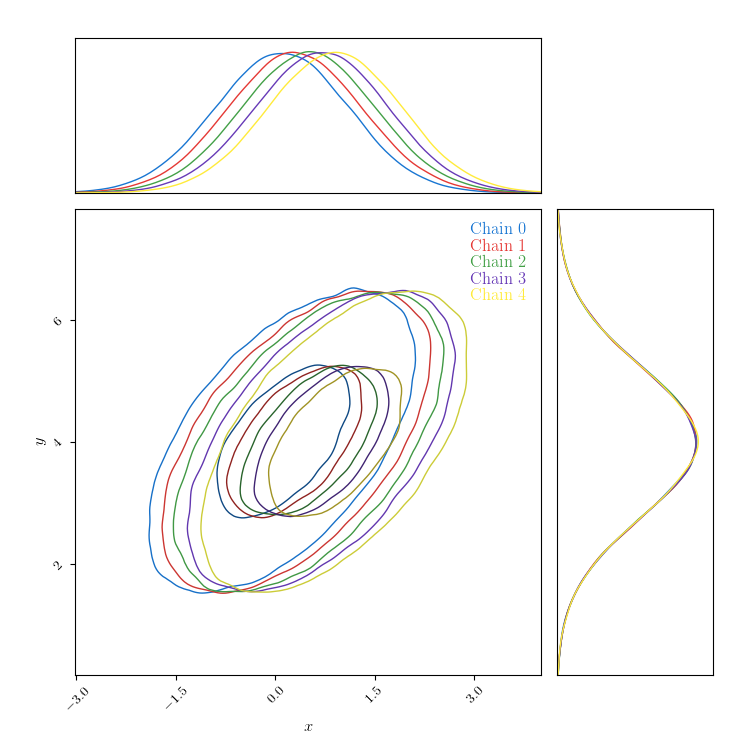

Dividing a chain¶
ChainConsumer can split one chain into many!
If you use a sampling algorithm with multiple walkers (which is fairly common), it can be useful to plot each walker as a separate chain so that you can verify that your walkers have all converged to the same place.
You can use the plot_walks method for this, or the convergence diagnostics,
but the more options the better!
In the below example, I assume the generated data was created using ten walkers. I introduce some fake shift in the data to badly emulate walker drift.
import numpy as np
from numpy.random import multivariate_normal
from chainconsumer import ChainConsumer
if __name__ == "__main__":
np.random.seed(0)
data = multivariate_normal([0.0, 4.0], [[1.0, 0.7], [0.7, 1.5]], size=1000000)
data[:, 0] += np.linspace(0, 1, data.shape[0])
c = ChainConsumer().add_chain(data, parameters=["$x$", "$y$"], walkers=5)
c2 = c.divide_chain()
fig = c2.plotter.plot()
fig.set_size_inches(4.5 + fig.get_size_inches()) # Resize fig for doco. You don't need this.
Total running time of the script: ( 0 minutes 1.479 seconds)